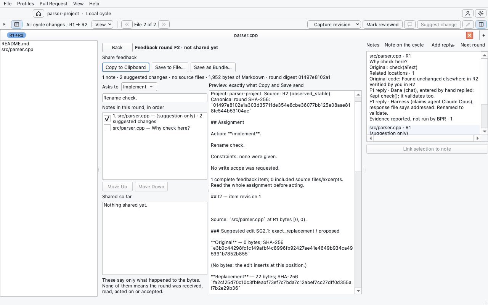

Sharing a round: what the rejected page got wrong, and three ways to fix it
The owner rejected the Compose feedback page at candidate BPR-1161-compose-share-v001: “There is a lot going on in this screen and it’s not a very pretty experience. I have no idea how I got to this screen, why I would wnat to do any of these actions, and what is important.” This round audits that page from its frozen render and offers three different answers.
Attended session cbd48b91, Reject at event 834, handed back at 835. The behaviour the automated course proves is not in question: one click fixes and copies the round, Copy and Save need no AI setup, and no note asks for its own confirmation. What failed is how the page presents it.
The audit
The frozen candidate’s own render (7a385389c, executable dc64a2c2…0f2128), at 1280 by 800. The pins mark the findings below.

1234567891011How did I get here? The entry path
- The only way in is an unlabeled pencil, 28 pixels wide, second from the right end of the review bar, beside the tray toggle. “Compose feedback” exists only in its tooltip. Nothing near the notes you have just written points to it.
- The tray’s “Next round” sounds like the way to share, and is not: it prepares the next draft from the last round. It is the one round-related word visible before the page opens.
- The page’s title is its only context, and it is jargon: “Feedback round F2 · not shared yet”. The reviewer never made a round or named one F2. Nothing says that a round is the notes written since the last share, or who it is for.
Why would I do this? Purpose and the primary action
- Three equal buttons, no primary, no reasons. Copy to Clipboard, Save to File… and Save as Bundle… have the same weight and come first, above the choices that shape what they send. Copy’s ring is only keyboard focus. Their purposes, and the fact that one click fixes the round, live only in tooltips.
- A line of internal facts sits directly under the buttons: note and suggestion counts, “no source files”, 1,952 bytes of Markdown and a round digest. None of it helps the decision to share.
- “Asks to” is unexplained, and the goal field under it has no label: “Rename check.” reads like a note, not like the round’s overall request.
- Move Up and Move Down are full buttons for ordering a two-item list.
What’s important? Hierarchy and noise
- “Shared so far” is a 200-pixel empty box before anything has been shared, and its three-line caveat is permanent.
- The preview is the biggest thing on the page and the least needed. It is raw Markdown with SHA-256 values, “observed_stable”, “item revision 1”, byte ranges and “exact_replacement / proposed”. The reviewer has to read machine detail to check their own words.
- The file list stays beside the page though nothing on the page uses it.
- The Notes tray shows the same notes again, in a different format, beside the page’s own list of them. Six bordered boxes of similar contrast compete, and the reading order zigzags between them.
Three directions
Each answers the three complaints differently. They share the app’s chrome, palette and type, and the same plain words: “Round 2” instead of F2, “Ask them to” with a line per choice, a reason beside Copy and Save, and the next step after sharing. The digest, byte counts and raw Markdown are moved behind “Read the exact text” in all three.
A short sheet drops from the review bar over the code, asks two things, and offers Copy round 2. Done returns you to the file. The lightest change.
B: Share from NotesNo page at all. The Notes tray shows your notes as round 2, and its foot holds Copy round 2. You never leave the code.
C: The round as a letterThe page becomes what you send: the request, then each note with its code and change, rendered. One panel beside it sends the round.
Side by side
| A: Share sheet | B: Share from Notes | C: The round as a letter | |
|---|---|---|---|
| Where you start | Share notes, labelled with the count, in the review bar | The Notes tray; its toggle carries the count | Share notes, labelled with the count, in the review bar |
| Leaves the code? | No; a sheet over it, Escape closes | No | Yes; a page with Back and Escape |
| Choosing and ordering notes | A compact list in the sheet | The tray’s own note cards | The full notes, with code and changes |
| The one primary action | Copy round 2, the sheet’s default | Copy round 2, full width at the tray’s foot | Copy round 2, top of the side panel |
| The exact text | A link that opens it in a document tab | A link that opens it in a document tab | A disclosure at the letter’s foot |
| After sharing | The sheet says what happened, what’s next, and what has been shared | The tray’s foot does; round 3 opens above | The panel does; the letter becomes read-only |
| Best for | Short rounds shared often | Reviewers who live in the tray | Long rounds that deserve a last read |
| Cost in Qt | Low: a sheet of existing widgets | Medium: tray delegate and foot | Highest: draws each note’s code on the page |
Not decided here
The words for each delivery observation (“Copied to the clipboard”, “Saved as …”, and the caveat that none of them means the round was read or acted on) are drawn in every direction’s after frames, but they belong to the open question BPR-1161-delivery-words-v001 (RC61-06). Changing a word in the exact text’s own format is RFC-BPR-0056’s, and none of the directions does.
Compose review on a pull request has its own later rethink, BPR-1212. Whichever direction is chosen here should give that card a starting vocabulary, but this round does not redesign it.
How these were made
The audit image is the candidate’s own offscreen render from its automated course. The frames are static HTML at the window’s real size, 1280 by 800, drawn with the colour roles in src/adapters/qt/src/appearance_profile.cpp and the chrome of the accepted RFC-BPR-0052 scaffolding (round v8). They are design evidence only. None of them is the built product, and none claims a native or owner result.